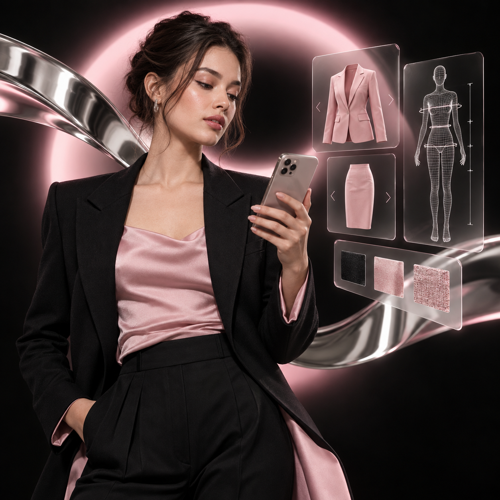

Размер
Верх и низ соответствуют разным размерам

3D-сканирование, персональный дизайн и AR-примерка — без поездок в ателье и случайной посадки.
Стандартная размерная сетка не учитывает рост, пропорции и особенности фигуры. В итоге подходящий цвет не совпадает с нужной длиной, а хороший жакет — с посадкой в плечах.
Верх и низ соответствуют разным размерам
Брюки длинные, жакет не сидит в плечах
Нужного фасона нет в подходящей ткани
Возвраты и подгонка снова требуют поездок

Смартфон фиксирует параметры и особенности фигуры.
Выберите фасон, длину, цвет, материал и детали.
Оцените пропорции и образ до оформления заказа.
Вещь создаётся по сохранённым параметрам.
Мы поговорили с 12 респондентами в Санкт-Петербурге. Результаты подтверждают интерес к персонализации, но не дают права обещать рыночный успех без следующего теста.
считают персонализацию важной или полезной
заинтересованы в 3D/AR-примерке
сталкиваются с проблемой размера и посадки
видят несоответствие фото и реальной вещи
не уверены в ткани и качестве
Мини-прототип показывает механику будущего сервиса: от модели и материала до цвета. Следующий этап — точная посадка по 3D-аватару.
Она должна снизить неопределённость перед заказом. Поэтому мы честно фиксируем ключевые риски продукта.
Поймём, готовы ли пользователи заказать вещь без очного снятия мерок.
Определим, сколько настроек дают свободу, а не перегружают выбор.
Проверим, какую доплату аудитория принимает за точную посадку и дизайн.